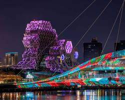

歷史倉庫活化：港口工業紋理與當代藝術的碰撞

「駁二」意指第二號接駁碼頭，位於高雄港第三船渠內。這群建於 1973 年的港口通用倉庫，原本用以儲存砂糖與魚粉，隨著高雄產業轉型而一度荒廢。2001 年起，在藝文界人士與政府的共同推動下，透過「老建築活化再利用（Adaptive Reuse）」的空間再生理念，將沉睡的工業遺址蛻變為南台灣最具指標性的當代藝術實驗場域。
在空間修復過程中，設計團隊並未抹去歷史的痕跡，而是刻意保留了原汁原味的清水紅磚牆、粗獷的木桁架、洗石子外牆與鋼筋混凝土結構。同時，置入現代化的照明、空調與輕量化鋼構，讓粗獷的工業底蘊與細緻的現代設計產生強烈的視覺張力。
作為駁二最早開發的基地，大勇群落由 12 棟舊倉庫組成。空間規劃包含駁二當代館、月光劇場等，主要舉辦前衛設計展與當代藝術展。外牆保留了時代感的斑駁感，並巧妙利用倉庫間的寬闊巷弄作為戶外裝置藝術展示場，打破了傳統美術館「白盒子（White Box）」的封閉界線，讓藝術全面走入生活空間。
鄰近哈瑪星鐵道文化園區，蓬萊群落將廣闊的百年歷史鐵道紋理納入設計。原本分隔兩地的倉庫群，透過鐵軌綠地的鋪面引導，轉化為一望無際的地景藝術公園。這裡的倉庫空間內部更寬廣，除了文創商品與展演空間外，經典的輕軌沿線設計更讓現代大眾運輸與歷史地景產生動態交織。
大義群落是後續整建的重點區域，由一棟棟排列和諧的磚造倉庫組成。此處空間尺度較為親切，內部被劃分為許多獨立的小型工作室、獨立書店、金工、陶藝與咖啡空間。空間設計上強調「前店後廠」的通透感，遊客穿梭在充滿綠意與紅磚的微型巷弄中，能近距離感受職人的創作空間氛圍。